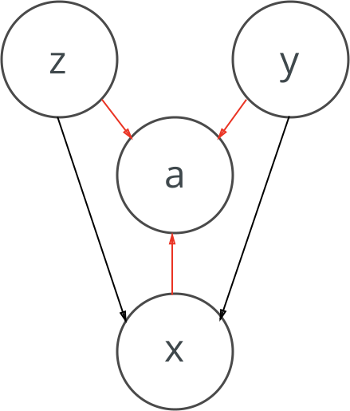

Auxiliary Deep Generative Models
The Auxiliary Deep Generative Network (ADGM)[Maaløe 2016] describes a generative model based on a variational autoencoder, which is enabled for semi-supervised learning[1]
Model performance
Notice how well the model performs in these charts.
In thermodynamics, the Helmholtz free energy is a thermodynamic potential that measures the "useful" work obtainable from a closed thermodynamic system at a constant temperature and volume. The negative of the difference in the Helmholtz energy is equal to the maximum amount of work that the system can perform in a thermodynamic process in which volume is held constant. If the volume is not held constant, part of this work will be performed as boundary work. The Helmholtz energy is commonly used for systems held at constant volume. Since in this case no work is performed on the environment, the drop in the Helmholtz energy is equal to the maximum amount of useful work that can be extracted from the system. For a system at constant temperature and volume, the Helmholtz energy is minimized at equilibrium.
Generated image
The model attempts to capture both the labels and the underlying distribution at the same time and improves over [Kingma 2014] by introducing an auxiliary variable \(a\). The Lower bound looks like this.
\[-\mathcal{L}(x, y) = \mathbb{E}_{q_{\phi}(z|x, y)} [ \log p_{\theta}(x|y, z) + \log p_{\theta}(y) + \log \frac{p(z)}{q_{\phi}(z|x, y)} ]\]
As a graphical model, it looks as follows[2]. Notice how we have added the auxiliary variable \(a\) into the model.
If the volume is not held constant, part of this work will be performed as boundary work. The Helmholtz energy is commonly used for systems held at constant volume. Since in this case no work is performed on the environment, the drop in the Helmholtz energy is equal to the maximum amount of useful work that can be extracted from the system. For a system at constant temperature and volume, the Helmholtz energy is minimized at equilibrium.
We can implement the training loop below.

The model attempts to capture both the labels and the underlying distribution at the same time and improves over [Kingma 2014] by introducing an auxiliary variable \(a\). The Lower bound looks like this.
As a graphical model, it looks as follows[2]. Notice how we have added the auxiliary variable \(a\) into the model.
If the volume is not held constant, part of this work will be performed as boundary work. The Helmholtz energy is commonly used for systems held at constant volume. Since in this case no work is performed on the environment, the drop in the Helmholtz energy is equal to the maximum amount of useful work that can be extracted from the system. For a system at constant temperature and volume, the Helmholtz energy is minimized at equilibrium.
We can implement the training loop below.
class DGMTrainer():
def __init__(self, model, objective, optimizer, cuda=False):
self.model = model
self.objective = objective
self.optimizer = optimizer
self.cuda = cuda
def calculate_loss(self, x, y=None):
is_unlabelled = True if y is None else False
x = Variable(x)
logits = self.model(x)
# If the data is unlabelled, sum over all classes
if is_unlabelled:
[batch_size, *_] = x.size()
x = x.repeat(n, 1)
y = torch.cat([generate_label(batch_size, i, n) for i in range(n)])
y = Variable(y.type(torch.FloatTensor))
if self.cuda:
x = x.cuda()
y = y.cuda()
Footnotes:
The gradient is actually given by $\nabla w = \frac{\partial f(w)}{\partial w}$.
There seem to be many different interpretations of $f(z)$, here we use $f(z) = 1/(1+ e^z)$.